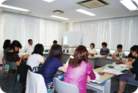

|
|
＜伊藤代表幹事・事務局長あいさつ＞ 近々行われます県民会議に先立ち、私たちも輸入食品について勉強しようと思います。一度に分からなくても少しずつ分かっていけば良いと考えておりますので、そのためにもこういった学習の機会を設けて行きましょう。 ■議題
（1）輸入食品の現状 ・我が国の食料自給率の推移から、輸入食品の割合が増加していて、農産食品・農産加工食品が非常に多くなっています。 （2）輸入食品の監視体制 ・輸入時の検査制度は、検査命令・モニタリング検査・指導検査等があり、重点的、効率的、効果的に行われています。 ・モニタリング検査は件数の算出方法があり、輸入件数・輸入重量・過去の違反率・違反内容の危害度を勘案し、食品群ごと、検査分類ごとに設定されています。 ・輸出国における衛生対策と衛生対策の推進について ・海外の食品安全情報は積極的に収集し、問題があった場合は緊急対応を行います。合わせて流通状況調査、回収、輸入時検査強化を行なっています。 （3）東京検疫所食品監視課の概要 ・届け出件数が大変多く、監視指導、輸入相談等を行っています。 ＜質疑応答概要＞（○は質問・意見、→は答え） ○以前中国産の輸入冷凍食品の餃子で食中毒事件がありましたが、どうして防げなかったのでしょうか。 →それぞれ個々の食品の検査はあるのですが、それらの食品が合わさった加工食品を検査することは難しく、また、制度もなく見過ごしてしまいました。現在は、2国間で報告をあげたりガイドラインを作ったりして検査も行っています。 ○モニタリング検査では不安があります。 →重点的、効率的、効果的に検査を行っています。安全の面で頑張っています。 以上の他にも、活発な意見交換をすることができました。 |